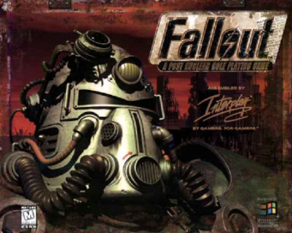

RPG · 1997
Fallout
A retro-future wasteland with dialogue that let you be genuinely awful.

Cover: Wikipedia: Fallout (video game)
Facts
- Released
- 1997-10-10
- Genre
- RPG
- Category
- RPG
- Platforms
- PC
- Developers
- Black Isle Studios
- Publishers
- Interplay Entertainment